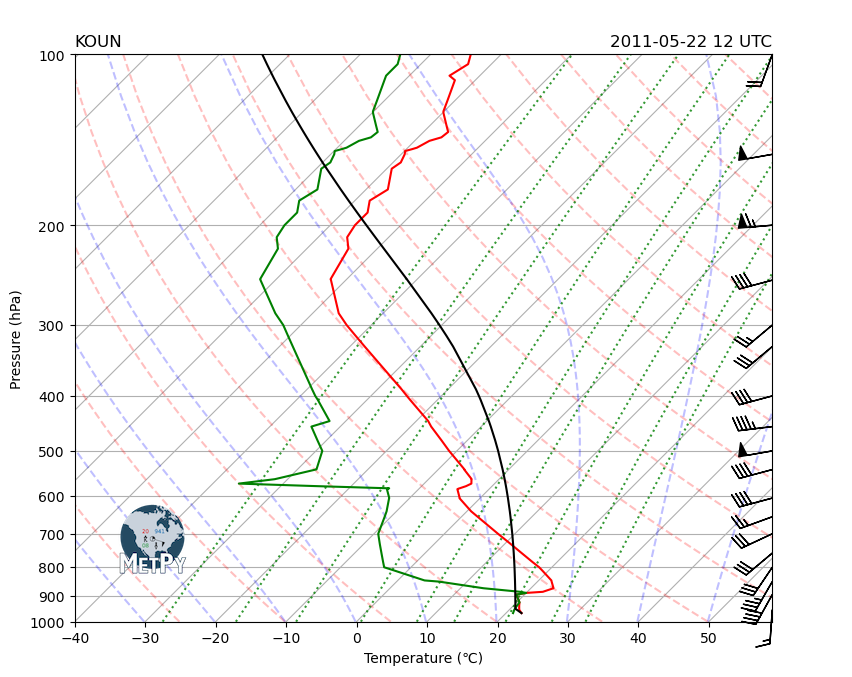

Sounding as Dataset Example
Use MetPy to make a Skew-T LogP plot from an xarray Dataset after computing LCL parcel profile.
Imports
import matplotlib.pyplot as plt
import numpy as np
import pandas as pd
import metpy.calc as mpcalc
from metpy.cbook import get_test_data
from metpy.plots import add_metpy_logo, SkewT
from metpy.units import units
Obtain Data and Format
Upper air data can be obtained using the siphon package, but for this example we will use some of MetPy’s sample data.
as_file_obj=False), skiprows=5, usecols=[0, 1, 2, 3, 6, 7], names=col_names) is necessary due to the formatting of the MetPy sample data. This formatting is not needed when using upper air data obtained via Siphon. Obtaining data with Siphon will be covered in a later notebook.
col_names = ['pressure', 'height', 'temperature', 'dewpoint', 'direction', 'speed']
sounding_data = pd.read_fwf(get_test_data('20110522_OUN_12Z.txt', as_file_obj=False),
skiprows=7, usecols=[0, 1, 2, 3, 6, 7], names=col_names)
# Drop any rows with all not a number (NaN) values for temperature, dewpoint, and winds
sounding_data = sounding_data.dropna(subset=('temperature', 'dewpoint', 'direction', 'speed'),
how='all').reset_index(drop=True)
Assign Units
We will pull the data out of the example dataset into individual variables and assign units. This is explained in further detain in the Simple Sounding notebook and in the Metpy documentation.
pres = sounding_data['pressure'].values * units.hPa
temp = sounding_data['temperature'].values * units.degC
dewpoint = sounding_data['dewpoint'].values * units.degC
wind_speed = sounding_data['speed'].values * units.knots
wind_dir = sounding_data['direction'].values * units.degrees
u, v = mpcalc.wind_components(wind_speed, wind_dir)
lcl_ds = mpcalc.parcel_profile_with_lcl_as_dataset(pres, temp, dewpoint)
lcl_ds
<xarray.Dataset>
Dimensions: (isobaric: 71)
Coordinates:
* isobaric (isobaric) float64 966.0 953.0 949.1 ... 104.0 100.0
Data variables:
ambient_temperature (isobaric) float64 <Quantity([ 22.2 21.4 ...
ambient_dew_point (isobaric) float64 <Quantity([ 21. 20.7 ...
parcel_temperature (isobaric) float64 <Quantity([295.35 294.20887...Create Sounding Plot
# Create figure and set size
fig = plt.figure(figsize=(9, 9))
skew = SkewT(fig, rotation=45)
# Plot the data using the data from the xarray Dataset including the parcel temperature with
# the LCL level included
skew.plot(lcl_ds.isobaric, lcl_ds.ambient_temperature, 'red')
skew.plot(lcl_ds.isobaric, lcl_ds.ambient_dew_point, 'green')
skew.plot(lcl_ds.isobaric, lcl_ds.parcel_temperature.metpy.convert_units('degC'), 'black')
# Plot wind barbs
my_interval = np.arange(100, 1000, 50) * units('hPa') #set spacing interval
ix = mpcalc.resample_nn_1d(pres, my_interval) #find nearest indices for chosen interval
skew.plot_barbs(pres[ix], u[ix], v[ix], xloc=1) #plot values closest to chosen interval
# Improve labels and set axis limits
skew.ax.set_xlabel('Temperature (\N{DEGREE CELSIUS})')
skew.ax.set_ylabel('Pressure (hPa)')
skew.ax.set_ylim(1000, 100)
skew.ax.set_xlim(-40, 59)
# Add the relevant special lines throughout the figure
skew.plot_dry_adiabats(t0=np.arange(233, 533, 15) * units.K, alpha=0.25, color='orangered')
skew.plot_moist_adiabats(t0=np.arange(233, 400, 10) * units.K, alpha=0.25, color='tab:green')
skew.plot_mixing_lines(pressure=np.arange(1000, 99, -25) * units.hPa, linestyle='dotted', color='tab:blue')
# Add the MetPy logo!
fig = plt.gcf()
add_metpy_logo(fig, 115, 100, size='small');
# Add titles
plt.title('KOUN', loc='left')
plt.title('2011-05-22 12 UTC', loc='right');
